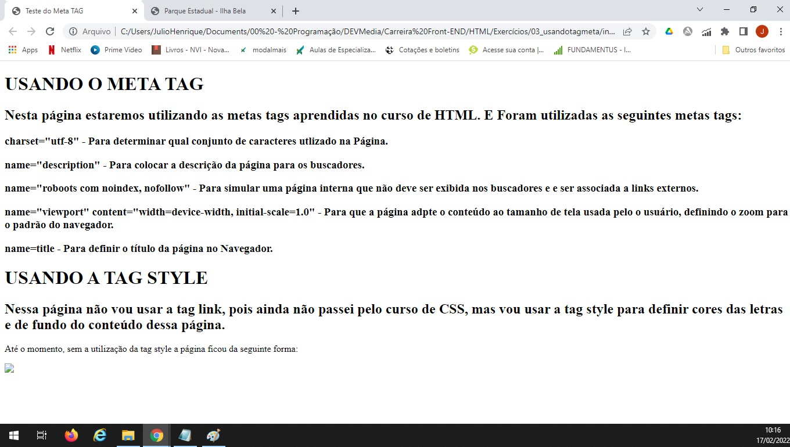
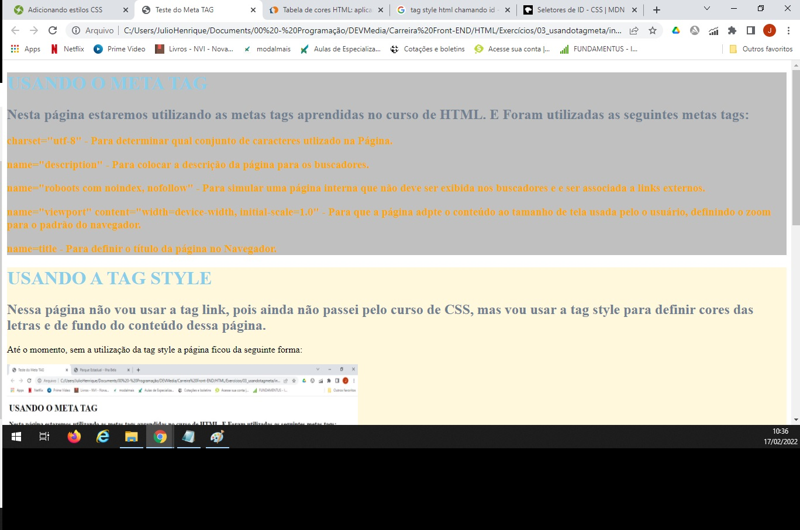

USANDO A TAG STYLE
Nessa página não vou usar a tag link, pois ainda não passei pelo curso de CSS, mas vou usar a tag style para definir cores das letras e de fundo do conteúdo dessa página.
Até o momento, sem a utilização da tag style a página ficou da seguinte forma:

Com a utilização do Style ficou da seguinte forma:
